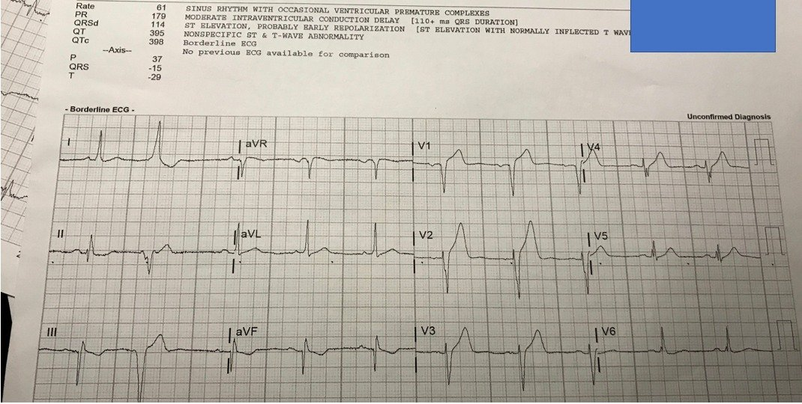
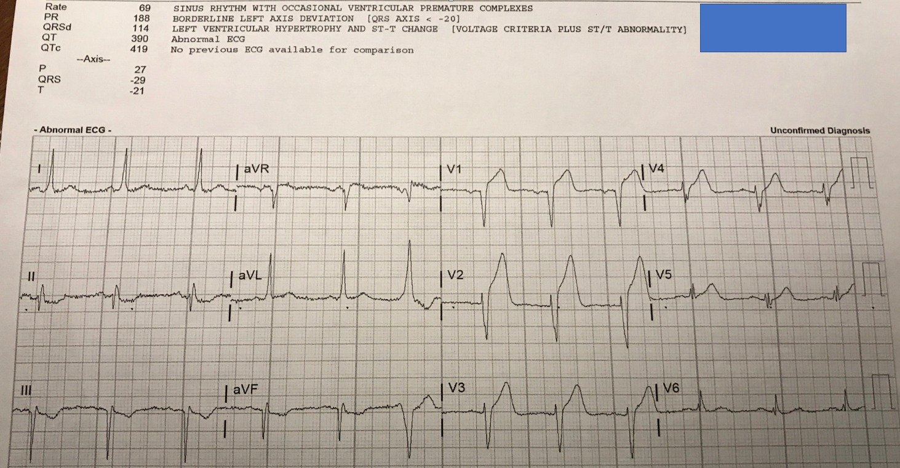
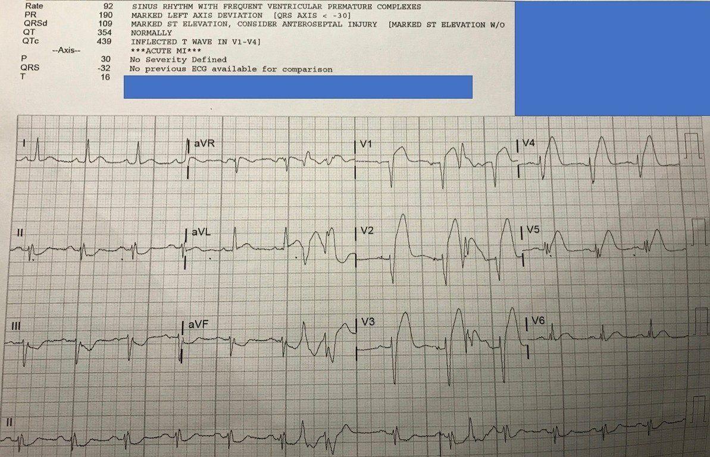
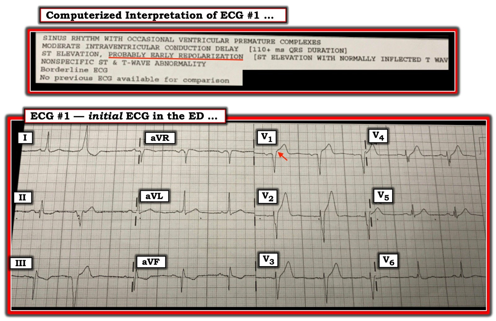

07/05/2019 — Điều gì xảy ra khi bạn không nhận ra một OMI?
Bản dịch tiếng Việt của bài "What happens when you don’t recognize an OMI?" – Dr. Smith’s ECG Blog. Giữ nguyên toàn bộ 6 hình ảnh của bản gốc.
Ca này do một “độc giả nhiệt tình” gửi đến. Ca bệnh đến từ bệnh viện của anh ấy, nơi không có phòng thông tim (cath lab).
Ca bệnh
Một bệnh nhân nam 60 mấy tuổi được chuyển đến từ phòng khám của các bác sĩ tim mạch sau khi đến đó vì đau ngực. Không có điện tâm đồ ghi tại phòng khám.
Cơn đau xuất hiện từng lúc trong vài ngày, nhưng nặng hơn vào ngày nhập viện.
Đây là điện tâm đồ ban đầu:


Có sóng T tối cấp (hyperacute T-waves), đặc biệt ở V2, cùng với các dấu hiệu khác tinh tế hơn.
Nếu bạn dùng công thức 4 biến:STE60V3 = 2.5
QTc = 398
RAV4 = 3
QRSV2 = 15
Giá trị = 20.28, khẳng định tắc LAD (18.2 là điểm cắt chính xác nhất).
Bác sĩ cấp cứu và bác sĩ tim mạch kết luận: “Không có STEMI. Nhập viện tại đây. Không chuyển viện.”
Tối thiểu, bệnh nhân này cần được ghi điện tâm đồ mỗi 15 phút. Việc này đã không được thực hiện. Điện tâm đồ tiếp theo được ghi sau đó 90 phút:


ST chênh lên lúc này thậm chí đã đạt “tiêu chuẩn”.
Tại sao máy tính không chẩn đoán được?
Kết quả troponin I đầu tiên là 1.5 ng/mL. Lần xét nghiệm lặp lại cho kết quả 2.5 ng/mL. Vẫn chưa ghi điện tâm đồ thứ 3.
Đến lúc này, bệnh nhân rơi vào sốc tim, và một điện tâm đồ khác được ghi ở phút thứ 270 (3 giờ sau điện tâm đồ thứ 2):


Có nhiều PVC.
Có ST chênh lên rõ ở aVL, kèm ST chênh xuống soi gương ở các chuyển đạo thành dưới.
Bệnh nhân được chuyển bằng trực thăng đến một cơ sở có khả năng làm PCI.
Thông tim: “Toàn bộ hệ động mạch vành trái bị tắc.” (kể cả thân chung). Phân suất tống máu 10%. Quá nặng để phẫu thuật bắc cầu chủ vành (CABG).
Tôi không có thêm thông tin về kết cục, nhưng cơ hội sống sót của bệnh nhân không cao.
Điểm cần học:
Đừng chờ đến khi có STEMI nếu bạn đã phát hiện một OMI (nhồi máu cơ tim do tắc).
Tất cả chúng ta đều còn nhiều điều phải học. Hy vọng bác sĩ này sẽ rút ra bài học từ ca này, để những bệnh nhân tương tự trong tương lai không phải chịu chung số phận.

===================================
Bình luận của KEN GRAUER, MD (7/5/2019):
===================================
Ca bệnh bi thảm này là một ca cần rút ra bài học. Đáng tiếc là những người cần học hỏi nhiều nhất ( = những đồng nghiệp bảo thủ của “độc giả nhiệt tình” đã gửi ca này) lại là những người ít có khả năng rút kinh nghiệm từ những sai lầm đã mắc phải nhất. Dr. Smith đã nhấn mạnh nhiều điểm MẤU CHỐT về ca này.
- Tôi xin bổ sung những suy nghĩ sau về điện tâm đồ ban đầu ghi ở người đàn ông 60 mấy tuổi này, người bị đau ngực mới khởi phát (Hình 1):


=================
Suy nghĩ #1:
- Tôi dám cược rằng bác sĩ cấp cứu đã đọc điện tâm đồ ở Hình 1 đã không sử dụng một Cách tiếp cận hệ thống. Nếu có — chắc chắn họ đã nhận ra rằng ngoài chuyển đạo V2 (mà như Dr. Smith đã nói — cho thấy một sóng T rõ ràng cao hơn nhiều và rộng ở đáy hơn nhiều so với mức đáng có, do đó là sóng T tối cấp ) — thì KHÔNG thể nào chuyển đạo V1 lại “bình thường” ở một bệnh nhân bị đau ngực mới khởi phát. Có ít nhất 2 mm ST chênh lên ở chuyển đạo V1 (mũi tên ĐỎ) — và điều đó hầu như không bao giờ là “bình thường”.
- Có rất nhiều hệ thống đang được dùng để đọc điện tâm đồ. Bất kể bạn dùng hệ thống của tôi hay một hệ thống khác mà bạn ưa thích — MẤU CHỐT là luôn luôn đi qua từng thông số thiết yếu cần đánh giá theo một trình tự giống hệt nhau, để bạn không bao giờ quên đánh giá đủ tất cả. Điều này đòi hỏi phải xem xét từng chuyển đạo trong 12 chuyển đạo của điện tâm đồ.
- Ưu điểm của việc dùng một Cách tiếp cận hệ thống: i) Chỉ cần luyện tập một chút — nó sẽ tăng tốc việc đọc điện tâm đồ của bạn! (vì bạn có một cách tiếp cận từng bước — và sẽ không còn quay đi quay lại để đánh giá lại những gì đã xem); và, ii) Một cách tiếp cận hệ thống sẽ cải thiện độ chính xác của bạn (vì bạn không còn bỏ sót điều gì …).
Hệ THỐNG của tôi: ( — BẤM VÀO ĐÂY — )
Bắt đầu với Phân tích Mô tả:
- Tần số & Nhịp — Nhịp xoang tần số ~60/phút. Có một PVC muộn trong chu kỳ ( = nhát thứ 2 trên bản ghi).
- Các khoảng — Khoảng PR bình thường; phức bộ QRS không rộng; và QTc không kéo dài.
- Trục — Trục mặt phẳng trán hơi lệch trái (QRS dương hoàn toàn ở chuyển đạo I — và có lẽ âm nhiều hơn dương một chút ở chuyển đạo aVF).
- Lớn các buồng tim — Không có.
- Thay đổi Q-R-S-T — Có sóng Q ở chuyển đạo aVF. Chúng ta chỉ thấy 1 nhát dẫn truyền từ xoang ở chuyển đạo III — và khó chắc chắn liệu có hay không có một sóng r nhỏ ban đầu ở chuyển đạo này. Chắc chắn có một sóng r nhỏ ban đầu ở chuyển đạo II. Ngoài ra có phức bộ QS ở chuyển đạo V1 — nhưng sóng R rõ ràng ở các chuyển đạo trước tim đã hình thành từ V2. Tăng tiến sóng R — cho thấy vùng chuyển tiếp hơi muộn (sóng R trở nên cao hơn độ sâu của sóng S ở khoảng giữa chuyển đạo V4 và V5). Sóng ST-T — Có đoạn ST võng xuống ở từng chuyển đạo thành dưới. Dấu hiệu nổi bật nhất là ST chênh lên ở chuyển đạo V1 và V2 (và có lẽ cũng chênh lên một chút ở chuyển đạo V3) — kèm sóng T trông cao hơn và rộng hơn mức đáng có so với biên độ tương đối của phức bộ QRS ở các chuyển đạo V1 đến V4.
Tổng hợp lại thành Nhận định Lâm sàng của bạn:
- Nhịp ở Hình 1 là nhịp xoang tần số ~60/phút — có 1 PVC muộn trong chu kỳ — và có bằng chứng của một nhồi máu cơ tim thành dưới cũ có khả năng (tức là, có sóng Q ở chuyển đạo aVF [có thể cả ở chuyển đạo III] — nhưng sóng ST-T ở các chuyển đạo thành dưới trông không có vẻ cấp tính). Đáng lo ngại nhất — có ST chênh lên ở V1 & V2, và sóng T tối cấp ở các chuyển đạo V1 đến V4. Vì người đàn ông ở độ tuổi 60 này bị đau ngực mới khởi phát — ta buộc phải giả định một hội chứng tim cấp (giả định là OMI) cho đến khi chứng minh được điều ngược lại.
- T.B. (P.S.) — Các phức bộ QRS bị phân mảnh (ít nhất là ở các chuyển đạo V4, V5 và V6) — điều này gợi ý mạnh rằng có bệnh tim nền.
=================
Suy nghĩ #2:
- Hãy nghĩ theo “Mẫu hình theo nhóm Chuyển đạo” (Patterns of Leads). Người đọc giàu kinh nghiệm tiết kiệm thời gian và tăng độ chính xác bằng cách “thu nhận” cùng một lúc nhiều chuyển đạo trong một vùng chuyển đạo nhất định. Ví dụ, “chủ đề” ở các chuyển đạo thành dưới là đã có nhồi máu thành dưới cũ — dù chắc chắn không có sóng Q ở nhát dẫn truyền từ xoang trong chuyển đạo II. Và lý do tôi nghĩ có ST chênh lên nhẹ kèm sóng T tối cấp ở chuyển đạo V3 — là vì KHÔNG còn nghi ngờ gì về các dấu hiệu này ở các chuyển đạo lân cận V1 và V2. Đây là lý do sóng T ở chuyển đạo lân cận tiếp theo ( = chuyển đạo V4) có lẽ cũng là sóng T tối cấp (cao hơn và rộng hơn mức đáng có so với phức bộ QRS nhỏ ở V4).
=================
Suy nghĩ #3:
- Thế còn Kết quả đọc bằng máy tính? Thật khó tin là máy tính lại gọi sóng ST-T ở các chuyển đạo ngực trong Hình 1 là “có lẽ tái cực sớm”. Điều này chỉ cho thấy máy tính có thể Sai đến mức nào! Nhưng ngay từ đầu chúng ta không bao giờ nên phụ thuộc vào kết quả đọc bằng máy tính!
- Tôi lại thích kết quả đọc điện tâm đồ bằng máy tính — vì tôi biết cách sử dụng chúng tốt nhất (BẤM VÀO ĐÂY — để xem Cách tiếp cận của tôi trong việc Sử dụng Máy tính). Tôi biết nhiều bác sĩ lâm sàng không thích kết quả đọc bằng máy tính. Đây là vấn đề sở thích cá nhân và kinh nghiệm lâm sàng với kết quả đọc bằng máy tính.
- NHỮNG ĐIỀU CƠ BẢN: Đừng bao giờ xem kết quả đọc bằng máy tính cho đến sau khi bạn đã tự đánh giá độc lập! Nhìn chung — máy tính rất giỏi tính tần số, trục và các khoảng. Theo kinh nghiệm của tôi — máy tính rất tệ trong việc đánh giá bất kỳ nhịp nào ngoài nhịp xoang! Máy tính thường làm ổn khi đánh giá các bản ghi bình thường — nhưng nó có thể bỏ sót một số dấu hiệu (như ST chênh lên và sóng T tối cấp, cũng như nhồi máu cơ tim thành dưới cũ ở Hình 1). ĐIỀU CỐT LÕI: Báo cáo của máy tính có thể giúp ích bằng cách gợi ý một số dấu hiệu mà bạn có thể chưa nghĩ tới — NHƯNG — bạn phải luôn luôn đọc lại (overread) những gì máy tính nói. NẾU bạn không đồng ý với những gì máy tính nói — thì hãy gạch bỏ những phần trong báo cáo của máy tính mà bạn không đồng ý! Trong ca cụ thể này — tôi nghi ngờ rằng kết quả đọc của máy tính, “có lẽ tái cực sớm” có thể đã khiến một hoặc nhiều bác sĩ lâm sàng đi chệch hướng …